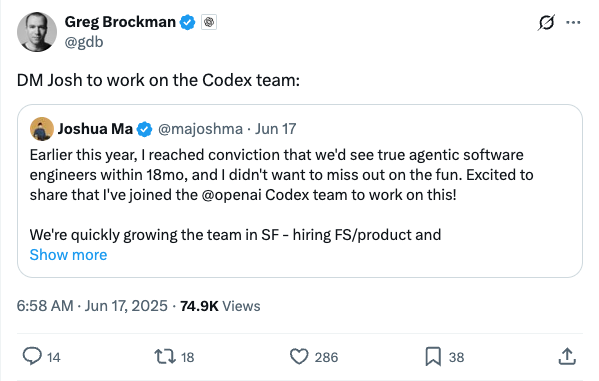

gdb_Joshua Ma加入OpenAI Codex团队，聚焦智能体软件工程师
发布时间: 2025-06-16T22:58:03.000Z Joshua Ma宣布加入OpenAI的Codex团队，致力于开发“智能体软件工程师”，并预计在18个月内实现这一目标。他表示不愿错过这一技术浪潮。OpenAI Codex团队正在旧金山迅速扩张，并积极招聘全栈工程师和产品经理。此举标志着OpenAI在自动化软件开发和AI智能体领域的重要布局。
2025-06-16
Joshua Ma宣布加入OpenAI的Codex团队，致力于开发“智能体软件工程师”，并预计在18个月内实现这一目标。他表示不愿错过这一技术浪潮。OpenAI Codex团队正在旧金山迅速扩张，并积极招聘全栈工程师和产品经理。此举标志着OpenAI在自动化软件开发和AI智能体领域的重要布局。
MiniMax宣布开源其最新大型语言模型MiniMax-M1，该模型在长上下文推理方面树立了新标准。MiniMax-M1拥有业界最长的100万token输入和8万token输出上下文窗口，并在开源模型中展现出领先的智能体应用能力。此外，该模型在强化学习训练效率方面表现卓越，仅用53.47万美元完成训练，显著降低了成本。
Google宣布其先进的视频生成模型Veo 3正在全球范围内逐步推出。该模型现已面向70多个市场的AI Pro和Ultra订阅用户开放，标志着Google在生成式AI视频领域的重要进展，将为用户提供更强大的视频创作能力，进一步推动AI在多媒体内容创作中的应用。
推文指出，月之暗面（Moonshot AI）已悄然发布其新的编程模型Kimi-Dev 72B。该模型在SWE-bench基准测试中取得了60.4%的验证通过率，并采用MIT许可证。Kimi-Dev经过强化学习训练，能够修补真实代码库，且仅在通过完整测试套件时才获得奖励，显示出其在代码生成和修复方面的强大能力。
Andrej Karpathy指出，LLM中的提示注入攻击类似于早期计算机病毒，防御机制尚不完善，这让他对个人计算中采用LLM智能体感到犹豫。他引用Simon Willison的观点，强调AI智能体若同时具备访问私有数据、暴露于非受信内容及外部通信能力，将构成“致命三联”，极易被攻击者利用窃取数据。
Sander Dieleman转发并评论了Subham Sahoo等人的ICML 2025论文《扩散对偶性》。该研究揭示了连续与离散扩散模型之间的深层联系，使得一致性蒸馏等先进技术能应用于离散设置。论文通过利用底层高斯扩散，实现了离散扩散语言模型的少步生成，并在七个零样本似然基准测试中击败了自回归模型，展现了其在语言生成领域的潜力。
谷歌产品负责人Logan Kilpatrick近期披露了公司未来AI路线图，核心聚焦Gemini模型的发展。该路线图强调Gemini将实现全模态能力（图像、音频、视频），并逐步演变为具备强大工具调用和系统化推理能力的智能体。值得注意的是，谷歌正积极探索“无限上下文”解决方案，这预示着可能需要抛弃现有Transformer架构中的注意力机制，以克服其致命缺陷。此外，谷歌还将推出更多小模型，并致力于将AI Studio转型为开发者平台。此举彰显谷歌在AI竞争中重回领先地位，并预示着AI将从被动响应转向主动式服务。
文章介绍了字节跳动推出的DreamActor-H1，这是一种基于扩散变换器的新型AI框架，能够仅凭单张人物和商品图片，快速生成高质量、高保真的真人产品演示视频。该技术通过注入人物产品参考信息和掩码交叉注意力机制，有效保留了人物身份和产品细节，并能生成物理上合理的演示动作。DreamActor-H1在大规模混合数据集上训练，在电商直播、个性化广告和互动媒体等领域展现出巨大潜力，有望革新传统直播带货模式，提升用户体验和营销效率。
图像生成巨头Midjourney正式入局视频生成领域，其初步展示的视频模型在动作流畅性、物理真实感及细节表现上令人印象深刻，尤其在多人物动作和纹理细节方面表现突出。然而，该模型目前缺乏音频功能，与竞品如Veo 3相比存在不足。与此同时，Midjourney的图像模型V7也在持续更新，引入了“草稿模式”（支持语音和对话控制）及加速功能，显著提升了生成速度和图像质量，特别是手部纹理的逼真度。Midjourney正积极收集用户反馈，以完善其视频和图像生成技术，展现了其在生成式AI领域的持续创新与竞争力。

小鹏汽车在CVPR 2025上首次验证了Scaling Law在自动驾驶VLA模型中的有效性，标志着行业重大突破。文章详细介绍了小鹏自研的“世界基座模型”技术方案，该模型以大语言模型为骨干，参数量达720亿，通过海量驾驶数据和强化学习进行训练，并在云端部署。为解决车端算力限制，小鹏采用知识蒸馏将云端大模型能力赋能车端小模型，实现了无规则代码托底的丝滑驾驶体验，展现出超越传统L2/L4的全局理解和决策能力。此举不仅回应了端到端系统“模仿而非超越”的质疑，更预示着自动驾驶与具身智能的融合新方向，小鹏正从“AI公司”视角重塑汽车。
腾讯AI Lab推出WebEvolver框架，通过引入协同进化的世界模型，成功突破现有基于大语言模型（LLM）的网页智能体性能瓶颈，在真实网页环境中实现10%的性能提升。该框架将世界模型定义为“虚拟网页引擎”，能够生成多样化的合成训练轨迹并进行多步前瞻推演，有效提升智能体与未见过网站的交互能力和训练效果。研究指出，世界模型具备知识迁移和多样化轨迹生成能力，即使存在轻微“幻觉”也不影响其作为“虚拟服务器”和“想象引擎”的核心价值。WebEvolver为构建持续进化的通用网络智能体提供了新范式，对无环境强化学习具有指导意义。
Keller Jordan通过一篇博客和GitHub分享其Muon优化器研究，成功入职OpenAI，此举颠覆了传统AI研究范式。Muon作为一种神经网络隐藏层优化器，显著提升了NanoGPT和大型Transformer模型的训练效率，甚至可能用于GPT-5训练。该案例表明，在快速迭代的AI领域，开放协作、快速迭代和实际影响力正取代传统论文发表成为衡量研究价值的关键标准。OpenAI等顶尖机构更看重实际潜力与技能，而非单纯学历或论文数量，预示着AI人才选拔和研究模式正向更注重实践和社区贡献的方向转变。

Anthropic Cookbook是一个为开发者构建Claude应用而设计的代码和指南集合。它提供可直接集成的代码片段，涵盖文本分类、检索增强生成、摘要、工具使用、多模态能力及高级技术等。该项目旨在帮助开发者利用Claude API，通过Python示例和可适配其他语言的概念，提升AI应用开发效率。
Anthropic的交互式提示工程教程旨在系统教授用户如何在Claude模型中构建最优提示。该课程通过9个章节及练习，涵盖提示基础结构、常见问题解决、Claude模型特性理解及从零构建复杂提示等内容。教程强调实践，提供“Example Playground”供用户实验，并介绍Claude 3 Haiku、Sonnet、Opus等模型，是提升大模型应用能力的实用指南。

该GitHub仓库“Awesome LLM Apps”是一个精选的大语言模型（LLM）应用集合，涵盖了检索增强生成（RAG）、AI智能体、多智能体团队、MCP（多模态控制策略）和语音智能体等多种技术。它展示了利用OpenAI、Anthropic、Google以及DeepSeek、Qwen、Llama等开源模型构建的实际应用。该项目旨在帮助开发者探索LLM在不同领域的应用潜力，并促进开源LLM应用生态系统的发展。

LeRobot是Hugging Face推出的一个PyTorch机器人学库，旨在降低机器人技术门槛，促进数据集和预训练模型的共享。它专注于模仿学习和强化学习，提供最先进的AI方法，并已包含预训练模型、人类演示数据集和仿真环境。该库支持构建如SO-101和LeKiwi等经济型机器人，并计划未来增加更多真实世界机器人支持，助力AI在实际机器人应用中的发展。
Prompt Optimizer是一款强大的AI提示词优化工具，旨在提升AI输出质量。它提供Web应用和Chrome插件两种使用方式，核心功能包括智能一键优化、原始与优化提示词对比测试、以及对OpenAI、Gemini、DeepSeek等主流AI模型的多模型集成。该工具采用纯客户端处理和本地加密存储，确保数据安全与用户隐私。用户可灵活配置高级LLM参数，并通过Vercel或Docker轻松部署，有效解决跨域问题，是优化AI交互体验的理想选择。

该GitHub仓库聚焦Dapr Agentic Cloud Ascent (DACA)设计模式，旨在解决构建和扩展千万级并发AI智能体系统的挑战。它深入探讨了Dapr、Kubernetes和OpenAI Agents SDK在实现大规模、高并发智能体系统中的应用，强调DACA模式在云原生、成本效益和弹性方面的优势。项目提供AI-201、AI-202、AI-301系列课程，涵盖从基础理论到行星级分布式AI智能体开发，为培养Agentic AI工程师和推动相关创业提供全面指导。

近期研究表明，大型语言模型（LLMs）在接收外部反馈时，具备一定改进其响应的能力。然而，这些模型能多大程度和多有效地整合外部反馈仍不明确。在理想情况下，如果LLMs接收到近乎完美和完整的反馈，我们期望它们能完全整合反馈，并将错误答案修正为正确答案。本文通过设计受控实验环境，系统地研究了LLMs整合反馈的能力。对于每个问题，一个求解器模型尝试给出解决方案，然后一个可访问近乎完整真实答案的反馈生成器会产生有针对性的反馈，之后求解器再次尝试。我们使用包括Claude 3.7（带或不带扩展思维）在内的最先进语言模型，在数学推理、知识推理、科学推理和通用多领域评估等多样化任务中评估了这一流程。令人惊讶的是，即使在这些近乎理想的条件下，求解器模型仍持续表现出对反馈的抵制，我们将这一局限性称为“反馈摩擦”（FEEDBACK FRICTION）。为了缓解这一局限性，我们尝试了基于采样的策略，如逐步提高温度和明确拒绝先前尝试的错误答案，这些策略虽带来改进，但仍未能帮助模型达到目标性能。我们还对“反馈摩擦”的潜在原因进行了严格探索，排除了模型过度自信和数据熟悉度等因素。我们希望通过揭示LLMs中的这一问题并排除一些显而易见的诱因，能有助于未来在自我改进方面的研究。

我们提出了一种基于扩散的框架，通过翘曲-修复方法实现对齐的新视角图像与几何生成。与以往需要密集姿态图像或受限于域内视角的姿态嵌入生成模型不同，我们的方法利用现成的几何预测器从参考图像预测部分几何，并将新视角合成表述为图像和几何的修复任务。为确保生成图像与几何之间的精确对齐，我们提出了跨模态注意力蒸馏，在训练和推理过程中将图像扩散分支的注意力图注入到并行的几何扩散分支中。这种多任务方法实现了协同效应，促进了几何鲁棒的图像合成以及清晰的几何预测。我们进一步引入了基于邻近度的网格条件化，以整合深度和法线线索，在点云之间进行插值并过滤掉错误预测的几何对生成过程的影响。经验证明，我们的方法在各种未见场景下实现了图像和几何的高保真外推视角合成，在插值设置下提供了有竞争力的重建质量，并生成了几何对齐的彩色点云以实现全面的3D补全。项目页面可在 https://cvlab-kaist.github.io/MoAI 获取。

随着上下文长度的增加，大型语言模型（LLM）面临日益增长的键值（KV）缓存带来的内存需求挑战。现有的压缩方法通常通过同质化注意力头维度或依赖注意力引导的令牌剪枝，但这往往会牺牲准确性或引入计算开销。我们提出了FourierAttention，一个无需训练的框架，它利用了Transformer注意力头维度异构作用的特点：较低维度优先处理局部上下文，而较高维度则捕获长距离依赖。通过将对长上下文不敏感的维度投影到正交傅里叶基上，FourierAttention能够用固定长度的频谱系数近似其时间演化。在LLaMA模型上的评估表明，FourierAttention在LongBench和Needle-In-A-Haystack (NIAH) 基准测试中实现了最佳的长上下文准确性。此外，我们还设计了一个定制的Triton内核FlashFourierAttention，通过简化读写操作来优化内存，从而在不影响性能的情况下实现高效部署。

用于AI对齐的人类反馈模型，例如支撑直接偏好优化（DPO）的模型，通常固化单一、静态的偏好集，从而限制了适应性。本文通过引入可配置偏好调优（CPT）——一种赋予语言模型根据明确、人类可解释指令动态调整其行为的新颖框架——挑战了单一偏好的假设。CPT利用合成生成的偏好数据，这些数据以源自结构化、细粒度评分标准的系统提示为条件，这些评分标准定义了诸如写作风格等期望属性。通过使用这些评分标准引导的偏好进行微调，大型语言模型（LLM）学会在推理时根据系统提示调整其输出，而无需重新训练。这种方法不仅提供了细粒度控制，还为建模更细致、更依赖上下文的人类反馈提供了一种机制。相关实验成果，如训练代码、生成数据集和微调模型已发布于 https://github.com/vicgalle/configurable-preference-tuning

面向任务的基于大语言模型的智能体正越来越多地应用于具有严格策略的领域，例如退款资格或取消规则。挑战在于确保智能体始终遵循这些规则和策略，适当地拒绝任何违反其的请求，同时仍保持有益和自然的交互。这要求开发定制的设计和评估方法，以确保智能体对恶意用户行为的韧性。我们提出了一种新颖的威胁模型，该模型侧重于旨在利用策略遵循型智能体谋取个人利益的对抗性用户。为了解决这个问题，我们提出了CRAFT，一个多智能体红队测试系统，它利用策略感知的说服策略来破坏客户服务场景中的策略遵循型智能体，其性能优于传统的越狱方法，如DAN提示、情感操纵和强制。在现有tau-bench基准的基础上，我们引入了tau-break，一个旨在严格评估智能体对抗操纵性用户行为鲁棒性的补充基准。最后，我们评估了几种直接但有效的防御策略。虽然这些措施提供了一定的保护，但它们仍有不足，这凸显了需要更强大、研究驱动的保障措施来保护策略遵循型智能体免受对抗性攻击。

近期研究表明，基于强化学习（RL）的后训练能有效提升大型语言模型（LLM）的推理能力。特别是，群组相对策略优化（GRPO）通过采用一种PPO风格的强化算法和基于群组的归一化奖励，展现了令人瞩目的成功。然而，GRPO在视频大型语言模型（Video LLM）中的应用研究较少。本文中，我们探索了GRPO在视频LLM中的应用，并指出了阻碍其有效学习的两个主要问题：（1）对安全机制的依赖，以及（2）优势值消失问题。为解决这些挑战，我们提出了DeepVideo-R1，一个使用我们提出的回归式GRPO（Reg-GRPO）和难度感知数据增强策略训练的视频大型语言模型。Reg-GRPO将GRPO目标重新表述为一个回归任务，直接预测GRPO中的优势值。这种设计消除了对裁剪和最小值函数等安全机制的需求，从而通过使模型与优势值对齐，促进了更直接的策略指导。我们还设计了难度感知数据增强策略，该策略在可解决的难度级别上动态增强训练样本，从而培养多样化且信息丰富的奖励信号。我们全面的实验表明，DeepVideo-R1显著提升了在多个视频推理基准上的视频推理性能。